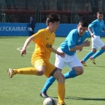
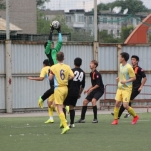
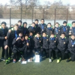

Балалар футболы

04.02.2016, 11:46
Футбол орталықтары мен академиялардың 2000 жылғы футболшыларынан құралған Республикалық «Жастар» турнирінің іріктеу кезеңі аяқталды.
11.01.2016, 10:46
Футбол орталықтары мен академиялардың 1998 жылғы футболшыларынан құралған Республикалық «Арман» турнирінің іріктеу кезеңі аяқталды.
20.10.2015, 11:55
21-27 ақпан аралығында Шымкент қаласында Республикалық «Жастар» турнирі өтеді. Турнирге футбол орталықтары мен академиялардың 2000 жылғы футболшыларынан құралған жасөспірім командалары қатысады.

01.09.2015, 10:16
21-27 ақпан аралығында Тараз қаласында футбол орталықтары мен академиялардың 1998 жылғы футболшылары арасында Республикалық «Арман» турнирінің іріктеу кезеңі өтеді
24.08.2015, 14:35
Бүгін Қазақстан футбол федерациясының президенті Ерлан Қожағапанов «Coca-Cola» компаниясының өкілдерімен кездесті.
08.08.2015, 14:20
Футбол орталықтары мен академиялардың 1997 жылғы жасөспірім командалары арасында ҚР біріншілігінің финалдық кезеңі 25-30 қазан аралығында Таразда өтті.
06.08.2015, 14:59
Футбол орталықтары мен академиялардың 1999 жылғы жасөспірім командалары арасында ҚР біріншілігінің финалдық кезеңі 25-30 қазан аралығында Шымкентте өтті.
.jpg)
10.07.2015, 15:33
Футбол орталықтары мен академиялардың 1998 жылғы жасөспірім командалары арасында ҚР біріншілігінің финалдық кезеңі 18-23 қазан аралығында Алматыда өтті.

10.07.2015, 15:33

.png)